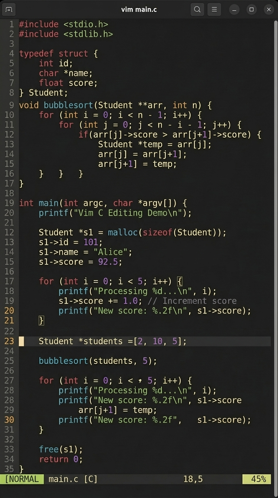
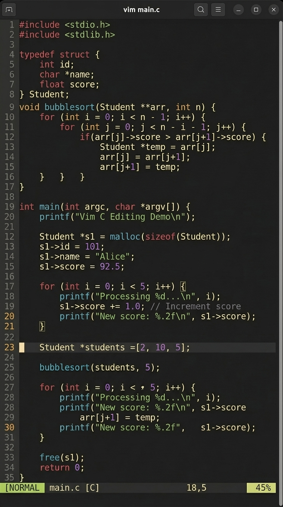
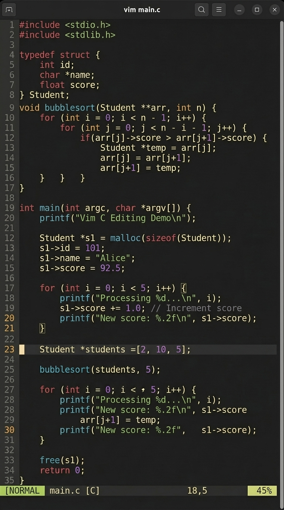

Some highlights of Google's image generation model, gemini-3-pro-image aka nano-banana-pro. These are *not* the overall best examples of the model, but rather the best that I have prompted. Click the images for full size, and mouse over for the prompts.
It's really good at alliterations
Why vibe code with Cursor when you can vibe code with Nano Banana Pro?

Useful for visualizing new/joke ideas quickly
![image of inside of a plane, where, on on the left side of the aisle, about half of the seats are taken; it looks like normal. on the right side of the aisle, there is the same number of people, but only half the seats, so all the seats are occupied and there is twice as much space between each row of seats. make it a technical diagram style, such as a proposition of a novel comfort-maximizing seat technology where seats (demonstrated on right side) can be slid along a track so as to stow the unused ones in the back; dynamic seating](cabin.png)

It understands mirrors